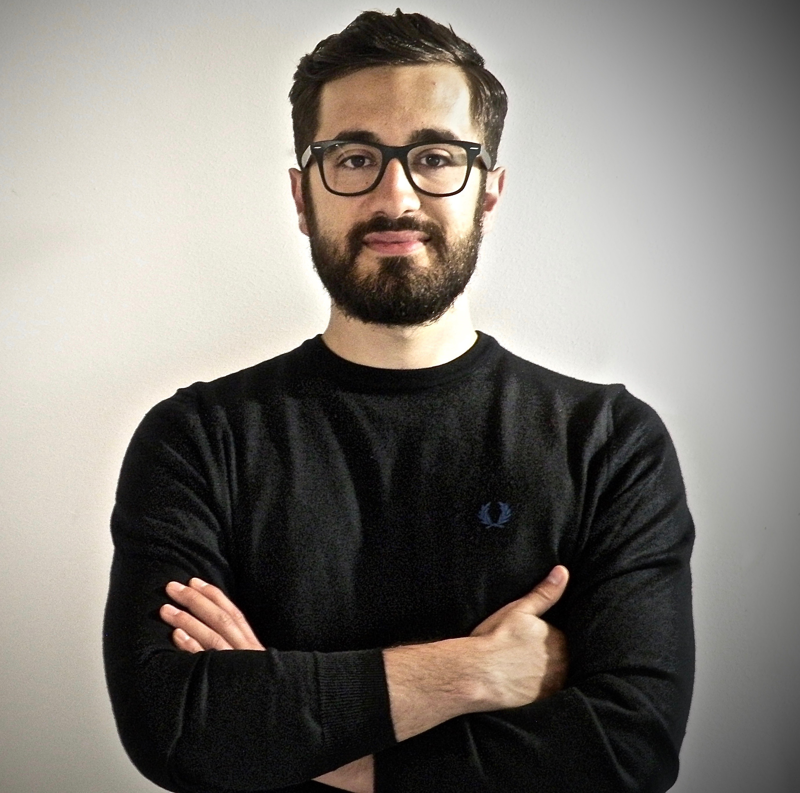

j-ISBA board members
Daniele Durante. Section Chair-Elect
My name is Daniele Durante, I am currently an Assistant Professor at the Department of Decision Sciences of the Bocconi University, Milan. Previously I was a Post-Doctoral Research Fellow at the department of Statistical Sciences of the University of Padova, where I also obtained my PhD in Statistical Sciences on April 2016, under the supervision of Professors Bruno Scarpa and David B. Dunson. My research is characterized by an interdisciplinary approach at the intersection of Bayesian methodology, complex data (e.g. networks, functions, arrays), modern applications, and statistical learning. comple-dimensional and noisy data. You can find something more in my webpage.
Federico Camerlenghi. Section Chair-Elect

Federico is research fellow in Statistics at the Department of Economics, Management and Statistics of the University of Milan-Bicocca. He received my Ph.D. in Mathematics and Statistics from the University of Pavia in December 2015 under the supervision of Prof. A. Lijoi and Prof. I. Pruenster, with a thesis entitled “Hierarchical and Nested Random Probability Measures with Statistical Applications”. His research interests encompass both computational and methodological aspects of Bayesian nonparametric statistics, including applications to species sampling problems, disclosure risk assessment and survival analysis. You can find something more in his webpage
Clara Grazian. Treasurer

Clara is a Postdoctoral Scientist who has joined the Nuffield Department of Medicine of the University of Oxford in January 2017, after completing a double PhD in Applied Mathematics and Statistics in Universite' Paris-Dauphine and Sapienza University of Rome, where she studied methods to perform Bayesian inference for complicated models, such as dependence and mixture models. She is currently involved in studying the mechanisms of development of drug resistance in Mycobacterium Tuberculosis, by using genome-wide association studies. In her work, she tries to use both frequentist and Bayesian methodologies to work with large datasets. See her webpage for more information.
Weixuan Zhu. Program Chair

Weixuan got his PhD in Statistics from Universidad Carlos III de Madrid. His thesis was entitled “Flexible Bayesian Nonparametric Priors and Bayesian Computational Methods”. Then he went to the University of Sheffield as a postdoc research associate, working on the applications of ABC methods in Ecology population modelling. In 2017, he joined Xiamen University as an Assitant Professor. His research interest mainly includes Bayesian nonparametric models, Approximate Bayesian Computation, and MCMC algorithms.
Ilaria Bianchini. Secretary

Ilaria is about to conclude a Phd in “Mathematical models and methods for engineering” at Politecnico di Milano, where she graduated in Mathematical Engineering, with a specialisation in applied statistics. Her research has been focused on Bayesian nonparametric models, clustering and biomedical applications. She was member of the local organising committee of BAYSM, the Bayesian young statistician meeting, held in Florence in June 2016. Currently, she is working as a research data scientist in a start-up, dealing with statistical models for natural language processing.